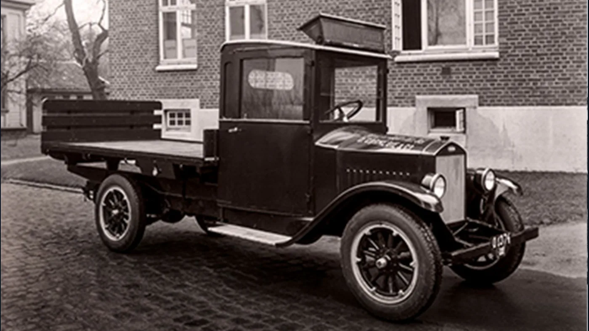
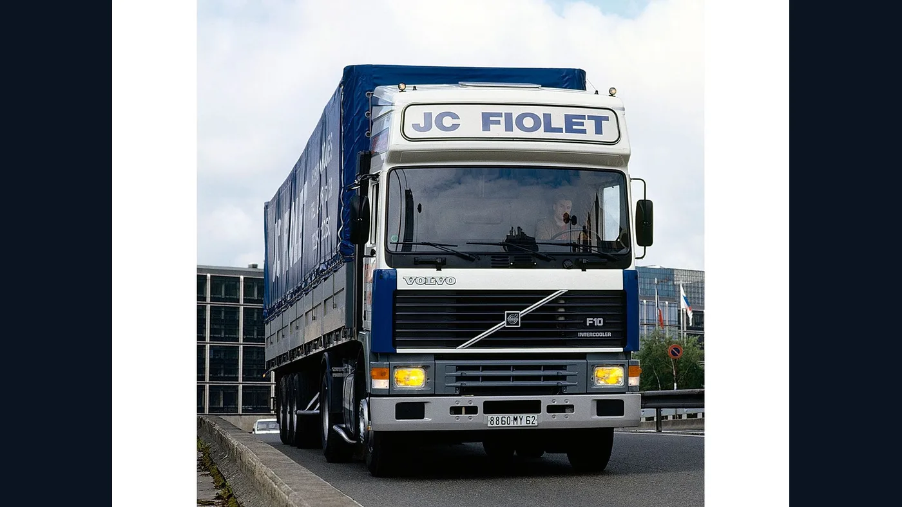
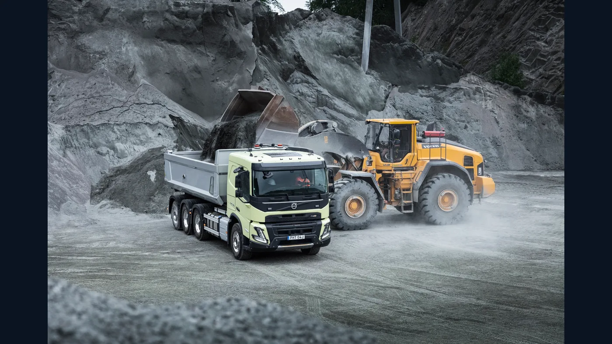
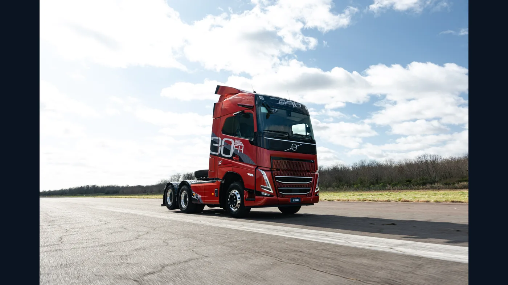

Cuando se habla de los camiones Volvo, el FH suele ocupar el centro de la conversación. Sin embargo, la historia comenzó mucho antes: en 1928 salió de una línea de montaje de Gotemburgo un vehículo de 28 caballos pensado para las rutas, el clima y las cargas de Suecia. Entre aquella Serie 1 y los camiones actuales hay casi un siglo de cambios en motores, cabinas, seguridad y organización del transporte.
También hay una historia argentina, distinta de la cronología mundial. Los camiones de la marca ya tenían presencia comercial antes de que Volvo Trucks & Buses Argentina se constituyera como filial en 2001. Separar esas dos trayectorias evita confundir el lanzamiento internacional de un modelo con su llegada o su configuración en nuestro mercado.
1927-1928: del primer automóvil al primer camión
Volvo inició la fabricación en serie de automóviles en 1927. Sus fundadores, Assar Gabrielsson y Gustaf Larson, vieron pronto una oportunidad en el transporte de carga. El nuevo vehículo debía soportar caminos difíciles y el invierno sueco: condiciones en las que la robustez y la posibilidad de mantenerlo en servicio importaban tanto como la velocidad.
En febrero de 1928 salió de la misma línea de montaje el primer camión Volvo, conocido como Serie 1 o LV Serie 1. Compartía inicialmente motor y transmisión con el automóvil de la marca. Según el archivo de Volvo Group, tenía cuatro cilindros, 28 hp y una capacidad de carga de 1.500 kg. La primera tanda de 500 unidades encontró compradores con rapidez y llevó a fabricar una segunda serie.

Esas cifras describen un vehículo de otra época; no deben compararse sin contexto con las de un tractor moderno. Su importancia está en haber convertido la fabricación de camiones en una actividad central de la empresa. Volvo había detectado que el transporte por carretera necesitaba productos concebidos para trabajar todos los días, no solo automóviles adaptados para llevar carga.
Los años treinta: una mecánica propia para trabajo pesado
Los primeros camiones habían heredado componentes del automóvil. Volvo Group sitúa en 1931 el paso a vehículos de carga cuya cadena cinemática ya no dependía de piezas de sus autos: incorporaron una caja de cuatro velocidades diseñada para uso pesado. El cambio fue menos vistoso que una nueva cabina, pero decisivo para ampliar capacidades y exigencias de trabajo.
El camión empezaba a diferenciarse como herramienta especializada. A medida que crecían las cargas y los recorridos, había que pensar en motor, transmisión, chasis y mantenimiento como un conjunto. En esa etapa se formó una parte de la identidad técnica que después permitió desarrollar gamas con aplicaciones muy distintas.
De la posguerra al Titan: diésel y turbo
Volvo presentó su primer camión diésel en la feria de Estocolmo de 1944, de acuerdo con su cronología corporativa. La posguerra aceleró la demanda de transporte y abrió paso a unidades mayores y más capaces. En 1951 apareció el L395 Titan, entonces el camión más grande de la marca.
La incorporación de un turbocompresor al Titan en 1954 mostró una nueva manera de obtener más potencia sin un aumento proporcional del tamaño del motor. El archivo de Volvo Group describe un incremento de 150 a 185 hp para aquella aplicación. El turbo no resolvía por sí solo todas las necesidades de una flota, pero inauguró una tecnología que se volvería habitual en el diésel pesado.
En esa misma década, la expansión industrial incluyó instalaciones dedicadas a camiones y otros vehículos comerciales. El crecimiento de la gama respondió a una realidad sencilla: distribuir mercancías en ciudades y mover grandes cargas a larga distancia exigían vehículos diferentes, aun cuando compartieran una marca.
1960-1970: cabinas y seguridad pasan al primer plano
Volvo comenzó a ensayar la resistencia de cabinas de camión a comienzos de los años sesenta. La empresa presentó en 1965 su programa System 8, una reorganización de productos y componentes para atender distintas misiones. En paralelo, el crecimiento internacional extendía fabricación y comercialización más allá de Suecia.
En 1969 Volvo creó un equipo de investigación de accidentes. La información recogida en siniestros reales pasó a contribuir al desarrollo de vehículos. Esa tarea es importante porque la seguridad de un camión no se limita a proteger a quien lo conduce: también afecta a ocupantes de otros vehículos y a usuarios vulnerables de la vía.
Conviene hacer una distinción histórica: el cinturón de tres puntos desarrollado por Volvo en 1959 pertenece originalmente a la historia de sus automóviles. Es parte de la trayectoria de seguridad del grupo, pero no debe presentarse como un equipamiento estrenado ese año en un camión. La evolución de las cabinas de carga tuvo su propio calendario de ensayos, refuerzos y sistemas.
1977: F10 y F12 cambian el lugar del conductor
La llegada de las series F10 y F12 en 1977 fue un hito del diseño de camiones pesados. La marca puso el foco en cabinas más seguras y en un espacio de trabajo pensado para pasar muchas horas al volante. La ergonomía dejó de ser un detalle secundario: acceso, visibilidad, mandos y descanso empezaron a evaluarse junto con la capacidad de arrastre.

La familia fue evolucionando con motores, equipamiento y distintas cabinas. La denominación Globetrotter se volvió especialmente reconocible en la larga distancia al asociarse con más espacio para la vida a bordo. Recordar un F10 o F12 exige identificar también su año y versión: los camiones de la misma familia no son idénticos entre sí.
En materia de seguridad, Volvo incorporó mejoras estructurales a sus cabinas y siguió desarrollando criterios de prueba exigentes. El valor histórico del F10/F12 no reside en una única pieza; combina productividad con la idea de que el conductor necesita un puesto de trabajo mejor resuelto para sostener operaciones largas.
1993: nace el FH
En 1993 Volvo lanzó el FH, una plataforma nueva que replanteó chasis, cabina, aerodinámica y tren motriz. Para diseñar la cabina, la compañía consultó a más de 1.500 conductores y usuarios. El resultado buscó mejorar no solo la conducción, sino también el descanso y la vida cotidiana dentro del vehículo.
El motor D12A fue una de las novedades técnicas de la primera generación. Se combinó con el Volvo Engine Brake, pensado para ayudar a controlar la velocidad sin recargar tanto los frenos de servicio. La carrocería también recibió trabajo aerodinámico: reducir resistencia significa consumir menos energía para cumplir una tarea comparable.
La seguridad continuó evolucionando. Volvo ofreció un airbag para conductor en camiones pesados en 1995 y presentó en 1996 una protección frontal contra empotramiento. No significa que todas las unidades de esos años estuvieran equipadas de igual modo; son hitos de desarrollo de la gama y deben leerse según mercado y configuración.
El FH no quedó congelado en 1993. Llegaron nuevas generaciones, motores y cabinas, incluido un rediseño integral presentado en 2012. En 2023 Volvo señaló que la familia rozaba 1,4 millones de unidades vendidas globalmente desde su lanzamiento. Esa continuidad explica por qué su nombre atraviesa tantas etapas de la empresa.
FM y FMX: no todo es larga distancia
El Volvo FM, cuya primera generación llegó en 1998, amplió las opciones para tareas regionales y otras aplicaciones donde maniobrabilidad, disposición de cabina y flexibilidad de chasis pueden importar tanto como el máximo espacio interior. Un camión no se elige solo por tamaño: se configura para los recorridos y la carga que hará.
En 2010 apareció el FMX, desarrollado especialmente para construcción y trabajos severos. La gama enfatizó resistencia, facilidad de uso y adaptaciones para terreno difícil. Volvo ha seguido actualizándola; el nombre FMX tampoco identifica una sola especificación universal.

La existencia de FH, FM y FMX resume una idea histórica: Volvo pasó de una oferta reducida a familias especializadas. Para un taller o una casa de repuestos, esa diversidad obliga a trabajar con número de chasis, motor, caja, año y referencia, no con el nombre comercial como único dato.
2001: I-Shift cambia la forma de manejar
La transmisión automatizada I-Shift fue presentada en 2001. Volvo la desarrolló como parte de la cadena cinemática del camión, no como un accesorio aislado. Al gestionar los cambios de marcha, buscaba reducir trabajo físico y ayudar a utilizar el motor de forma más eficiente.
Con los años llegaron versiones y funciones para distintas aplicaciones, incluso relaciones muy bajas para maniobras exigentes. La mejora de confort se entiende mejor cuando se piensa en una jornada completa: cada cambio manual que deja de exigir atención libera esfuerzo, aunque el conductor siga siendo responsable de controlar el vehículo y el entorno.
Como ocurre con cualquier tecnología, la evolución también modificó el mantenimiento. Dos camiones con I-Shift pueden pertenecer a generaciones y configuraciones distintas. Antes de pedir una pieza o interpretar una falla, corresponde identificar el conjunto instalado y consultar el procedimiento técnico aplicable.
Volvo en Argentina: de la importación a una red propia
La marca circulaba en Argentina antes de contar con una filial local. Un concesionario oficial, Agecer, sitúa en 1997 el inicio de la venta y posventa autorizada por un importador. En 2001 se constituyó Volvo Trucks & Buses Argentina S.A. como subsidiaria de la compañía sueca. Son dos hitos diferentes: presencia comercial previa y organización corporativa posterior.
Volvo explicó en su comunicado por los veinte años de la filial que en 2001 había seis concesionarios y que hacia 2021 la red había alcanzado treinta puntos de servicio y talleres asociados. Esas cifras pertenecen a fechas concretas, no describen necesariamente el tamaño actual de la red. Lo relevante para el recorrido histórico es el paso de la importación a una estructura de atención más amplia.
La gama local se adaptó a trabajos de larga distancia, cargas regionales, construcción y agro. Eso no implica que todos los modelos mundiales o todas las tecnologías hayan estado disponibles en Argentina al mismo tiempo. Para reconstruir la historia de una unidad que trabajó aquí, hay que mirar su documentación y su configuración de mercado.

En 2025 la filial presentó una edición local del FH por las tres décadas del modelo en Argentina. El aniversario no cambia la fecha de lanzamiento mundial de 1993: señala el recorrido comercial de esa familia en nuestro país. La distinción entre cronología global y cronología argentina ayuda a leer correctamente cualquier celebración de marca.
2018-2026: electricidad, combustibles y aerodinámica
Volvo entregó sus primeros camiones totalmente eléctricos a clientes en 2018 y comenzó la producción en serie en 2019. Partió de tareas donde los recorridos y la recarga podían planificarse con mayor facilidad, como distribución urbana. Después amplió modelos y aplicaciones hacia trabajos regionales y pesados.
En 2024 presentó el FH Aero, una evolución centrada en la aerodinámica, con variantes diésel, a gas y eléctricas anunciadas para distintos mercados. En 2026 la marca comunicó una nueva generación de pesados eléctricos. Las cifras de autonomía y las condiciones comerciales cambian según versión, carga, clima, infraestructura y mercado; una noticia europea no equivale a disponibilidad automática en Argentina.
La electrificación no borra de golpe al diésel ni elimina las necesidades de mantenimiento. Introduce nuevas preguntas sobre energía, talleres, formación, piezas y organización de la flota. La historia de Volvo muestra una convivencia de soluciones: del turbo a la transmisión automatizada y de la aerodinámica a las propulsiones de bajas emisiones.
Una historia que se reconoce por sus decisiones
Entre la Serie 1 y un FH actual hay más que un salto de potencia. Volvo fue redefiniendo qué debía resolver un camión: soportar el trabajo, cuidar a quien lo conduce, convivir con otros usuarios de la vía y mantenerse disponible para la empresa. Modelos como el Titan, el F10/F12, el FH, el FM y el FMX expresan etapas distintas de esa búsqueda.
Para propietarios y talleres argentinos, conocer la cronología aporta contexto, pero nunca reemplaza la identificación precisa del vehículo. Un nombre histórico puede reunir motores, transmisiones y equipamientos muy diferentes. El mejor modo de respetar el legado de un camión es entender qué versión tenemos delante y mantenerla de acuerdo con sus especificaciones reales.